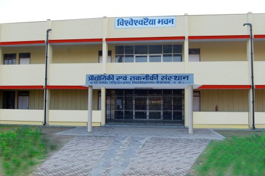

|  |
Established in April 2000, the Institute of Engineering and Technology of Dr. Rammanohar Lohia Avadh University is the only graduation level technical Institute of Ayodhya district. Institute made a modest beginning from the academic session 2000-01 with two engineering departments offering B.Tech. in Information Technology and Computer Sciences and a PG course MCA. Prof. Pandey, B.B. Lal became the founder Director of the Institute who was succeeded by Prof. Laxmi Kant Singh within a year of its establishment. Prof. L. K. Singh steered the Institute on a progressive path of Electronics and Communication Engineering Department in 2001-02 and Mechanical Engineering Department in 2002-03. In the same session, the institute was shifted to its new Vishweshvarraiyah Bhawan" raised in the satellite campus of university. In July, 2006 Prof. Kalyan Singh from Department of Physics and Electronics became the third director of the Institute. During his tenure institute galloped ahead and consolidated its infrastructure. Foundation for new laboratories, mechanical Engineering workshop and hostels were laid down. Prof. Kalyan Singh developed a crisp and modern work culture. |
He emphasized the use of modern audio-video teaching aids, equipping all the departments with laptops and projectors, along with organizing workshops in cutting edge technologies, thus heralding a new journey that's continuing to even this date under his second tenure. Meanwhile, session 2013-14 witnessed brief tenures of Prof. N.S. Darmwal and Prof R.L. Singh as director.
Institute now encompasses five departments in accordance with AICTE guidelines, each with an intake of 60 students. All the departments have adequate, qualified teachers and basic infrastructure in place and are constantly striving to enrich the learning experience. Ever since its inception, admissions to the courses are being made through Uttar Pradesh State Engineering Entrance Examination. At present, lET has two boys hostels and a girls hostel with adequate capacity. Institute also has a well stocked library in addition to the university central library.
In the last 14 years, the Institute has established itself as a reputed center of learning. Many of its students are well placed in reputed public and private enterprises not only in India but abroad too. Every year, increasing number of students get selected in premier institution of higher learning after qualifying GATE. Students have performed well not only in academics but also in sports, co-curricular and social activities. Students of lET participate actively and regularly in National Cadet Corps (NCC) and National Service Scheme (NSS).
Institute is now taking shape of a premier engineering institute owing to the vision of its current director, has taken many ambitious steps to leap into a new era. A system of mentoring has been instituted to help identify special needs of the students and develop individual as professionals. To accomplish this, few hobby groups have also been started such as HAM Radio, Robotics, Social- Entrepreneurship, Arts, Culture and Literary group to help in professional development
Another major step of far reaching consequences is digitization of all records and establishing a first of its kind 'Learning Support System' that provides customized learning experience and efficient administration. Teachers, staff and students of the institute are leaving no stone unturned to meet the expectations of all the stake holders. The 'Institute of Engineering & Technology' is committed to contribute for betterment of the society and development of the nation.